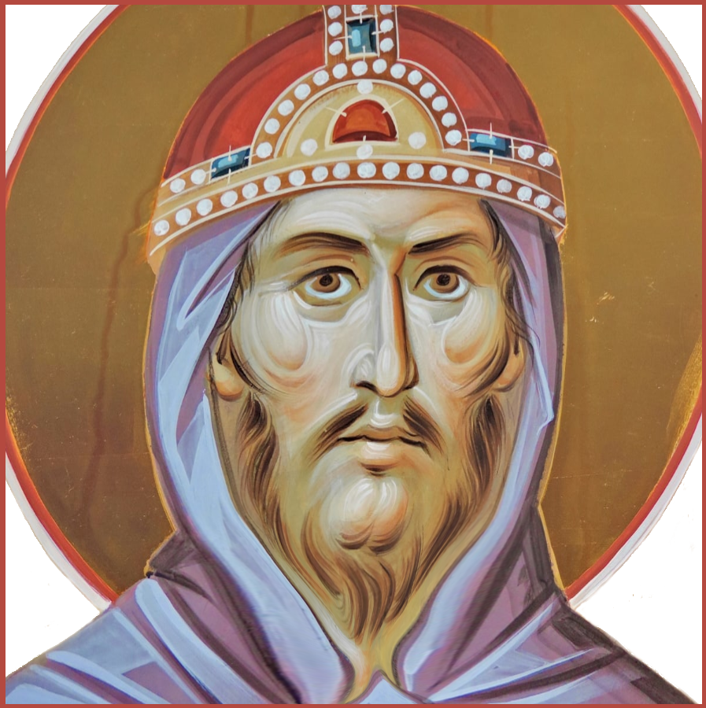

Viele kennen die Geschichte des Turmbaus zu Babel, aber wir werden eine ganz andere Sicht dieser Erzählung jetzt anbieten. Das herkömmliche Verständnis der Geschichte ist, dass sie eine Lehre von Hochmut wäre, aber bevor wir diese Annahme weiter untersuchen, werfen wir einen Blick auf die Lage zu Beginn der Geschichte. Die Sinnflut war jetzt längst vorbei und die Menschheit breitete sich wieder durch die Welt aus, aber daraus entstand nun eine neue Entwicklung. Die Menschen waren ein Volk mit einer gemeinsamen Sprache, und viele von ihnen zogen um, nach einem Lande namens Sinear wo es viel flache Erde gab. Dort unternehmen sie ein großes Vorhaben als geschildert in Mose Kapitel 11, Verse 3 bis 4: „Wohlauf, lasst uns Ziegel streichen und brennen! und nahmen Ziegel zu Stein und Erdharz zu Kalk und sprachen: Wohlauf, lasst uns eine Stadt und einen Turm bauen, des Spitze bis an den Himmel reiche, dass wir uns einen Namen machen! denn wir werden sonst zerstreut in alle Länder”
Auf diese Aktivität wurde Gott aufmerksam (Verse 5 bis 8): „Da fuhr der HErr hernieder, dass er sähe die Stadt und den Turm, die die Menschenkinder bauten. Und der HErr sprach: Siehe, es ist einerlei Volk und einerlei Sprache unter ihnen allen, und haben das angefangen zu tun; sie werden nicht ablassen von allem, was sie sich vorgenommen haben zu tun. Wohlauf, lasset uns herniederfahren und ihre Sprache daselbst verwirren, dass keiner des anderen Sprache verstehe!” Interessant ist, dass dieser Zustand, bei dem die Menschheit eine einzelne Sprache und Kultur teilt, erst nach der Sinnflut in Erscheinung tritt, obwohl die Menschheit einander vor der Sinnflut genauso ähnlich wäre. Wie dem auch sei, setzte Gott seinen Plan fort und, in fast demselben Wortlaut wie die Menschen ihre Sorge im Vers 4 zum Ausdruck brachte, „... zerstreute sie der HErr von dort in alle Länder, dass sie mussten aufhören die Stadt zu bauen.” Und damit findet diese kurze Erzählung schon ihr Ende, dennoch bleibt aber viel Stoff worüber es nachzudenken lohnt. Ist diese Erzählung tatsächlich eine Geschichte über Hochmut? Obwohl man die Erzählung so interpretieren könnte, gäbe es auch die mythologische Anschaungsweise: eine Erzählung über den vermeintlichen Ursprung der vielen Sprachen und Kulturen in der Welt.
Aber von einer mythologischer Basis abgesehen, gibt es immer eine ganz andere Interpretation, wenn wir die Worte Gottes in dieser Erzählung in Betracht ziehen. Gott sagt: „sie werden nicht ablassen von allem, was sie sich vorgenommen haben zu tun.” Hier scheint Gott Sorgen über die Fähigkeit einer großen vereinten Menschenmasse zu machen, was aber schwer nachvollziehbar wäre, denn Gott ist allmächtig. Also was hat das alles zu bedeuten? Jetzt kommen wir zu der Analyse: In diesem Text soll man auf den ähnlichen Wortlaut der Menschen und den Gottes achten. Die entsprechenden Abschnitte finden wir fast am Anfang der Verse 3 und 4 für die Menschen, und Vers 7 für Gott:
Vers 3 (Menschen): ...Wohlauf, lasst uns Ziegel streichen und brennen! Vers 4 (Menschen): ...Wohlauf, lasst uns eine Stadt und einen Turm bauen Vers 7 (Gott): Wohlauf, lasset uns herniederfahren und ihre Sprache daselbst verwirren
Hier wie in einer früheren Erzählung, nutzt Gott die Mehrzahl (uns) in seinem Appell. Da nicht weiter detailiert wird, wer die Begleiter Gottes sind, können wir vermuten, dass diese vielleicht Engel bzw. „Söhnne Gottes” sein könnten. Außergewöhnlich in diesem Fall ist, wie seine Wortwahl der der Menschen ähnelt, sodass man fast auf die Idee kommen könnte, es handle sich hier um zwei Menschengruppen: eine elite Gruppe und das gewöhnliche Volk bzw. die breite Masse. In dem Kontext wäre die Erzählung ein Gleichnis politischer Natur! Hier symbolisieren Gott und seine nicht näher erwähnten Begleiter eine Art politische oder könnigliche Elite, also Herrscher. Im Gegensatz zu Gott der allmächtig ist, machen menschliche Herscher aller Art tatsächlich Sorgen um die breite Masse, über die sie herrschen, denn keine herrschende Gruppe will außer Kontrolle geratene Untertanen. So gehesen, könnte man das Vorhaben, die Sprachen der Menschen zu verwirren und sie zu verstreuen, als die klassische Taktik „Divide et impera” (teile und herrsche) erkennen, mit dem Ziel das Herrschaftsmonopol fest im Griff zu behalten. Vielleicht fragt man sich, für wen ein solches Gleichnis gedacht sei? Fakt ist: die Bibel enthält Lehre vieler Arten, ob moralischer, gesellschaftlicher spiritueller Natur, usw. usf. Es wäre dann nicht überraschend zu erwarten, dass die Bibel auch Politik behandelt. Die Verfasser der Bibel würden sicherlich ihre Ansammlung an Weisheiten an künftige Generationen weitergeben, was wahrscheinlich hier auch der Fall ist.